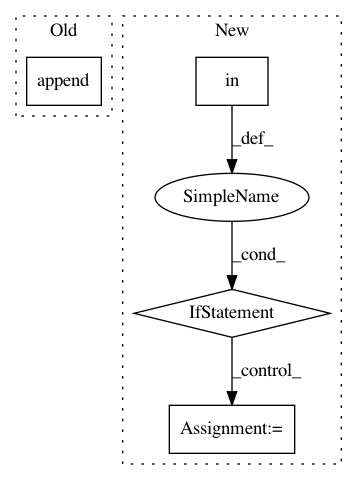

560cb94519ad5a5eed3adc323a9e1ad3cf0690e9,keras/callbacks.py,BaseLogger,on_batch_end,#BaseLogger#Any#Any#,120
Before Change
self.current += batch_size
loss = logs.get("loss")
self.log_values.append(("loss", loss))
self.tot_loss += loss * batch_size
if self.params["show_accuracy"]:
accuracy = logs.get("accuracy")
self.log_values.append(("acc.", accuracy))
After Change
for k, v in logs.items():
self.log_values.append((k, v))
if k in self.totals:
self.totals[k] += v * batch_size
else:
self.totals[k] = v * batch_size
// skip progbar update for the last batch; will be handled by on_epoch_end
if self.verbose and self.seen < self.params["nb_sample"]:
self.progbar.update(self.seen, self.log_values)
def on_epoch_end(self, epoch, logs={}):
In pattern: SUPERPATTERN
Frequency: 4
Non-data size: 4
Instances
Project Name: keras-team/keras
Commit Name: 560cb94519ad5a5eed3adc323a9e1ad3cf0690e9
Time: 2015-06-30
Author: francois.chollet@gmail.com
File Name: keras/callbacks.py
Class Name: BaseLogger
Method Name: on_batch_end
Project Name: NifTK/NiftyNet
Commit Name: 01c3a882833dc5031df2f4440717870b35e4833a
Time: 2017-05-29
Author: wenqi.li@ucl.ac.uk
File Name: utilities/constraints_classes.py
Class Name: ConstraintSearch
Method Name: list_subjects_potential
Project Name: NifTK/NiftyNet
Commit Name: 453269872f7e4dc9a6dc81a1c758ffc365cfc312
Time: 2017-05-22
Author: wenqi.li@ucl.ac.uk
File Name: utilities/constraints_classes.py
Class Name: ConstraintSearch
Method Name: create_list_from_constraint
Project Name: microsoft/nni
Commit Name: 1cada380ff768d6e59aa4089734cbed74014b9bb
Time: 2019-11-17
Author: v-yugzh@microsoft.com
File Name: src/sdk/pynni/nni/nas/pytorch/enas/mutator.py
Class Name: EnasMutator
Method Name: on_calc_layer_choice_mask